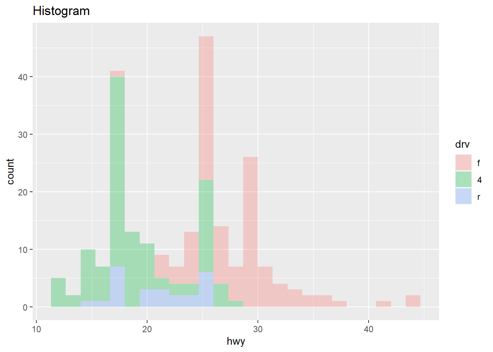
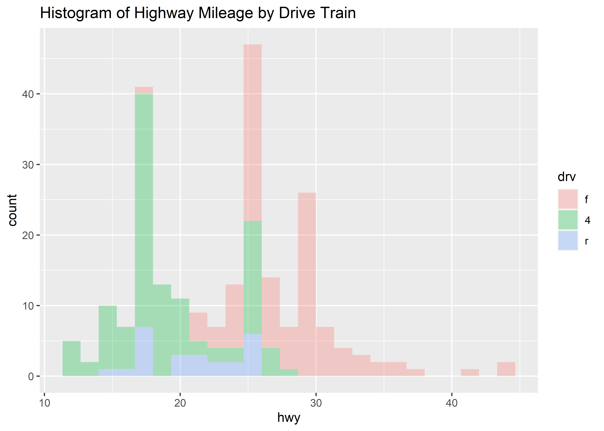
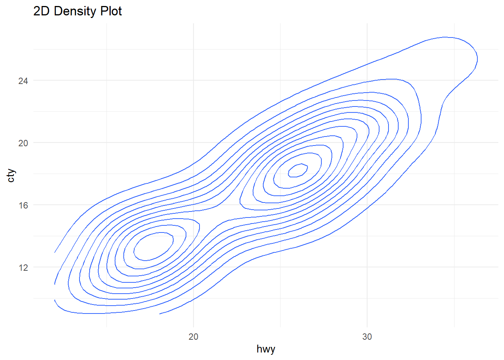

📊 Distributions
Distributions
Slides and Tutorials
| R (Static Viz) | R (Interactive Viz) | Radiant Tutorial | Datasets |
Some of the very basic and commonly used plots for data are:
- Bar and Column Charts
- Histograms and Frequency Distributions
- Box Plots
- 2D Hexbins Plots and 2D Frequency Distributions
- Ridge Plots ( Quant + Qual variables)
Histograms are best to show the distribution of raw quantitative data,by displaying the number of values that fall within defined ranges, often called buckets or bins.
Although histograms may look similar to column charts, the two are different. First, histograms show continuous data, and usually you can adjust the bucket ranges to explore frequency patterns. For example, you can shift histogram buckets from 0-1, 1-2, 2-3, etc. to 0-2, 2-4, etc. By contrast, column charts show categorical data, such as the number of apples, bananas, carrots, etc. Second, histograms do not usually show spaces between buckets because these are continuous values, while column charts show spaces to separate each category.
Let us listen to the late great Hans Rosling from the Gapminder Project, which aims at telling stories of the world with data, to remove systemic biases about poverty, income and gender related issues.
Let us look at the popular mpg dataset ( from R ) using mosaic::inspect(). We get two new pieces of output (i.e. two new dataframes), describing the Qual and Quant variables separately:
categorical variables:
name class levels n missing
1 manufacturer character 15 234 0
2 model character 38 234 0
3 trans character 10 234 0
4 drv character 3 234 0
5 fl character 5 234 0
6 class character 7 234 0
distribution
1 dodge (15.8%), toyota (14.5%) ...
2 caravan 2wd (4.7%) ...
3 auto(l4) (35.5%), manual(m5) (24.8%) ...
4 f (45.3%), 4 (44%), r (10.7%)
5 r (71.8%), p (22.2%), e (3.4%) ...
6 suv (26.5%), compact (20.1%) ...
quantitative variables:
name class min Q1 median Q3 max mean sd n
1 displ numeric 1.6 2.4 3.3 4.6 7 3.471795 1.291959 234
2 year integer 1999.0 1999.0 2003.5 2008.0 2008 2003.500000 4.509646 234
3 cyl integer 4.0 4.0 6.0 8.0 8 5.888889 1.611534 234
4 cty integer 9.0 14.0 17.0 19.0 35 16.858974 4.255946 234
5 hwy integer 12.0 18.0 24.0 27.0 44 23.440171 5.954643 234
missing
1 0
2 0
3 0
4 0
5 0There is a lot of Description generated by the mosaic::inspect() command ! What can we say about the dataset and its variables? How big is the dataset? How many variables? What types are they, Quant or Qual? If they are Qual, what are the levels? Are they ordered levels? Discuss!
Note the standard method for all commands from the mosaic package:
goal( y ~ x | z, data = mydata, …)
With ggformula, one can create any graph/chart using:
gf_geometry(y ~ x | z, data = mydata)
OR
mydata %>% gf_geometry( y ~ x | z)
The second method may be preferable, especially if you have done some data manipulation first! More later!
mpg <- mpg %>% mutate(drv= as_factor(drv))
gf_histogram(~ hwy, fill = ~ drv, alpha = 0.3, data = mpg) %>%
gf_labs(title = "Histogram")
gf_density(~ hwy, fill = ~ drv, data = mpg) %>%
gf_labs(title = "Frequency Density")
gf_boxplot(hwy ~ drv, fill = ~ drv, data = mpg) %>%
gf_labs(title = "Boxplot")
gf_violin(hwy ~ drv, fill = ~ drv, data = mpg) %>%
gf_labs(title = "Violin")



mpg <- mpg %>% mutate(drv= as_factor(drv))
gf_density_ridges(drv ~ hwy, fill = ~ drv, alpha = 0.3,
rel_min_height = 0.005, data = mpg) %>%
gf_refine(scale_y_discrete(expand = c(0.01, 0)),
scale_x_continuous(expand = c(0.01, 0))) %>%
gf_theme(theme_minimal()) %>%
gf_labs(title = "Ridge Plot")
gf_hex(cty ~ hwy, fill = ~ drv, data = mpg) %>%
gf_theme(theme_minimal()) %>%
gf_labs(title = "Hex Bin Plot")
gf_density_2d(cty ~ hwy, data = mpg) %>%
gf_theme(theme_minimal()) %>%
gf_labs(title = "2D Density Plot")


- Histograms, Frequency Distributions, and Box Plots are used for Quantitative data variables
- Histograms “dwell upon” counts, ranges, means and standard deviations
- Frequency Density plots “dwell upon” probabilities and densities
- Box Plots “dwell upon” medians and Quartiles
- Qualitative data variables can be plotted as counts, using Bar Charts, or using Heat Maps
- 2D density plots are used for describing two quant variables
- Ridge Plots are density plots used for describing one Quant and one Qual variable (by inherent splitting)
- We can split all these plots on the basis of another Qualitative variable.(Ridge Plots are already split)
Your Turn
- Click on the Dataset Icon above, and unzip that archive. Try to make distribution plots with each of the three tools.
- A dataset from calmcode.io https://calmcode.io/datasets.html
- Old Faithful Data in R ( Find it!)
inspect the dataset in each case and develop a set of Questions, that can be answered by appropriate stat measures, or by using a chart to show the distribution.
- See the scrolly animation for a histogram at this website: Exploring Histograms, an essay by Aran Lunzer and Amelia McNamara https://tinlizzie.org/histograms/?s=09
- Minimal R using
mosaic. https://cran.r-project.org/web/packages/mosaic/vignettes/MinimalRgg.pdf - Plotting multiple plots using purrr::map and ggplot. Sebastian Sauer